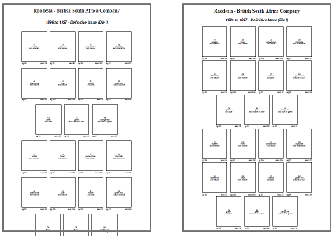
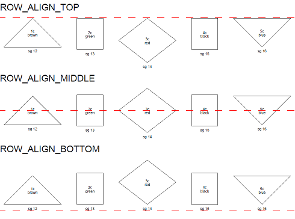
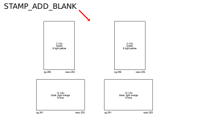

| PAGE_START_VAR command |
This command adjusts the spacing of a page independently from the rest of the
album.
For example an album was created with ALBUM_PAGES_SPACING (5.0 5.0) which set the page spacing
to 5.0mm in both the horizontal and vertical directions. One of the pages overflowed
the bottom border as shown by the left image.
To correct the page, the spacing of the whole album could have been changed or the set of stamps could
have been split onto two pages.
Alternatively as illustrated in the image on the right, the spacing of the offending page can
be adjusted independently. A PAGE_START_VAR (5.0 2.0) command reduced the vertical spacing
to 2.0mm allowing all stamps to fit on the page.

| ROW_ALIGN_TOP, ROW_ALIGN_MIDDLE and ROW_ALIGN_BOTTOM commands |
The following diagram illustrates the affect that each of these commands has on the vertical row alignment:

| STAMP_ADD_BLANK command |
The following diagram illustrates how this command can be used to insert spacing between stamps in a row:
